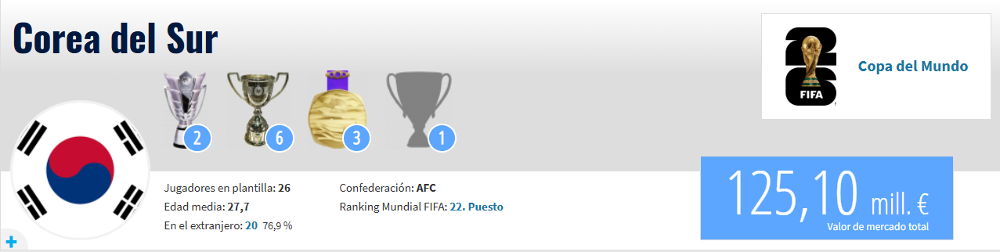

Corea del Sur se presenta en Norteamérica como el "Tigre de Asia", habiendo sellado su clasificación con una autoridad aplastante en las eliminatorias de la AFC, donde demostró que su fútbol ya no solo es velocidad, sino también orden táctico de élite. Los surcoreanos han evolucionado de ser un equipo defensivo a uno que propone transiciones eléctricas, aprovechando la madurez de una generación que compite en las ligas más exigentes del mundo. Su estandarte indiscutible es Heung-min Son, quien a pesar de los años sigue siendo uno de los finalizadores más letales del planeta y el alma del vestuario; junto a él, Kim Min-jae se ha erigido como un central de clase mundial, capaz de secar a los delanteros más físicos de Europa. La herencia de este equipo se cimenta en el sacrificio de Park Ji-sung, el incansable mediocampista que brilló en el Manchester United, y en la figura de Cha Bum-kun, el pionero que en los años 80 abrió las puertas de la Bundesliga para los futbolistas asiáticos, dejando un legado de profesionalismo que hoy es el ADN de esta selección.